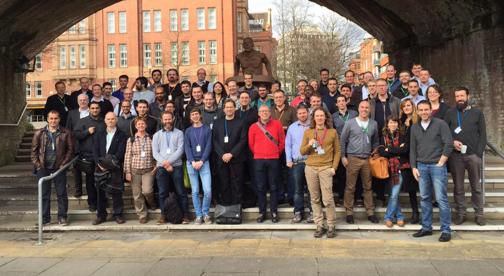

#apereo15
A free, open-source platform to support the management of educational audio and video content.
~ opencast.org
#ocman2015
I wish all of my lectures were recorded. It adds so much value to my overall learning experience. I am able to work at my own pace in a work environment that is best suited to me at a time that suits me best ... The only real improvement that needs to be done is that more (all) venues and lectures should be recorded.
~ Student
The LT Team (UCT)
http://www.slideshare.net/smarquard/why-do-students-use-lecture-recordings
https://opencast.jira.com/wiki/display/LECTURESIGHT/LectureSight+Project+Home
https://opencast.jira.com/wiki/display/MH/Engage+Theodul+Pass+Player
http://paellaplayer.upv.es/
...